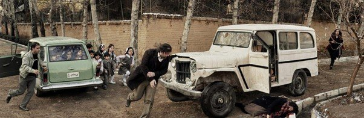
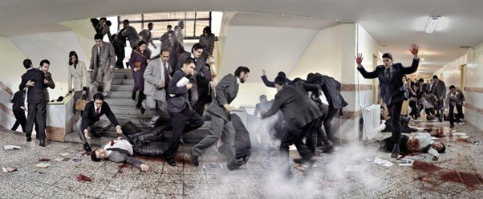
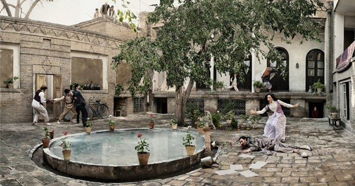
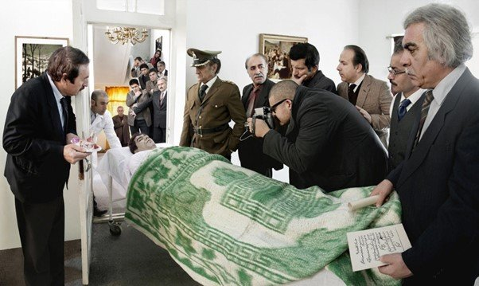
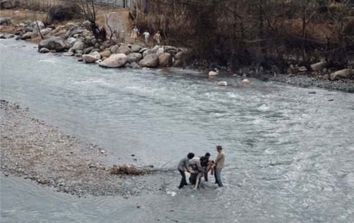
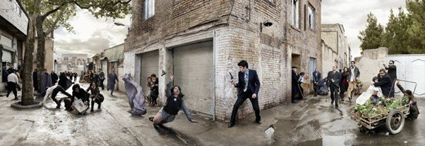

By Ismail Fayed

Azadeh Akhlaghi, Tehran, Forough Farrokhzad, 13 February 1967
It became difficult, walking around Delhi's Art Heritage Gallery last month, to look at large-format images of violent deaths, showing victims as they succumb, or their faces and bodies postmortem.
Seventeen assassinations over a century of Iranian history (1908-1998) have been re-staged for spectacular photographs, each named after the person assassinated. The artist, Azadeh Akhlaghi, first showed the images in Paris and her native Tehran in 2012. Each image, some a meter by two meters or even larger, is accompanied by research and eyewitness testimonies on the last hours and minutes of the lives of the 17 victims. They are journalists, poets, political reformers, scientists, filmmakers, activists, clerics — all individuals who resisted the oppression of the Pahlavi Shahs, only to continue suffering the same, if not more, in the wake of the 1979 Islamic Revolution.
The images have a glossy cinematic feel, as they unravel with the drama of their tragic events. Akhlaghi inserts herself as a bystander, mourner or protester, appearing as a physical eyewitness to pivotal moments suppressed, distorted or marginalized by the authorities to circumvent any attempt to endow them with symbolic power or significance. Akhlaghi disrupts this silent monopoly over history by suggesting that while these events cannot be witnessed again, they can be infinitely re-enacted, each time gaining more relevance for an audience denied the chance to experience the emancipatory potential of these figures' resistance and utopian visions.
For me, the experience of seeing the works invoked many memories of protesters, activists, imams, and students murdered by the Egyptian authorities, their memories suppressed by the state in a refusal to acknowledge its own culpability or to honor the memory of those who died.
Indeed, Akhlaghi re-stages assassinations using a lexicon of revolutionary symbols and gestures that are not necessarily specific to Iran. This universal language grounds her images in a long history of resistance. For the image of student Azar Shariat Razavi's 1953 killing, for example, Akhlaghi used two images from the Syrian revolution as visual references.

Azadeh Akhlaghi, Faculty of Engineering, Tehran University, Azar Shariat Razavi, Ahmad Ghandchi and Mostafa Bozorgnia, 7 December 1953
She also uses the choreography of other iconic images, like John Filo's Pulitzer Prize-winning photograph from the 1970 Kent State shootings in the US of teenager Mary Ann Vecchio kneeling over slain protester Jeffrey Miller. The image Akhlaghi made of writer Mirazdeh Eshghi's murder in 1924, in which a maid screams over his dead body, echoes precisely the aftermath of that confrontation between the state and the student anti-war movement in the US.

Azadeh Akhlaghi, Tehran, Mirzadeh Eshghi, 3 July 1924
Even Che Guevara makes a guest appearance, in the image of the death of Iran's most beloved wrestler, Ghulam Reza Takhti, who was said by the authorities to have killed himself in 1968. The wrestler's body, hauled out of his room on a stretcher with state officials on both sides, echoes the image taken by Freddy Alborta of Guevara's post-execution body displayed in Bolivia's Vallegarnde in 1967. It provides the same foreboding sense of conspiracy and animosity.

Azadeh Akhlaghi, Atlantic Hotel, Tehran, Gholamreza Takhti, 7 January 1968
The images then are not about one singular event, but recall all other moments of resistance that have happened. For us who see them, the act of witnessing is renewed — because heroic resistance becomes a universal moment reincarnated again and again. Akhlaghi's work is not an attempt to document or reconstruct suppressed truth or to faithfully capture contentious events from oblivion, but rather to ensure their continuous transmissibility.
She says several people on Facebook have shared her images as actual documentation of these assassinations (such as the photo of wrestler Gholamreza Takhti). The truthfulness of the re-enactment can become a purely formal matter. We are not going to judge the accuracy of Azadeh's re-stagings, yet they implicate her and us as witnesses, ensuring a continuing ethical responsibility to remember.
Coming from a filmmaking background — she has worked with renowned Iranian director Abbas Kiarostami and Manijeh Hekmat — Akhlaghi's photos reflect a filmic mindset, where the narrative is central. While a film unfolds through a designated time, however, Akhlaghi condenses each complex story into one shot. This creates visually dense images that teem with detail and imagined cacophonies of sound — shotguns and screams of passersby, or the disheartened murmurs of a funeral scene — that are barely muted by the photographs' flatness.
Joining a long tradition of image-making, Akhlaghi excels in recreating fleeting moments into compositions resembling grand Baroque or nineteenth-century history paintings, full of tumult and restlessness. Their iconicity, choreography and detail are dazzling.
A portrayal of Samad Berhangi, the late Iranian writer and critic, in which he is lifted from the waters of the Aras river, looks like the baptism of Jesus in the Jordan river, with three men carrying the deceased body.

Azadeh Akhlaghi, Aras River, Samad Behrangi, 3 September 1968, 2012
Another shows Marzieh Ahmadi Oskuie, an Iranian leftist activist, falling to her death as her gun flies over her head and her chador drifts by itself through the air. The scene is populated by Iran's notorious secret service agents, who point their guns at Marzieh, as bystanders scream or run.

Azadeh Akhlaghi, Marzieh Ahmadi Oskuie, Tehran, 26 April 1974
Akhlaghi's compositional approach sometimes overwhelms the images. It is possible to become distracted by the beautiful scenography, as Eshghi's death scene: the gorgeous courtyard with its magnificent fountain takes over, and at first we barely notice the poet lying on the ground. This somehow renders Yazdi's death as poetic as his life.
Akhlaghi's work is an aesthetic act that challenges the oppressive politics that has systematically used assassinations to suppress dissent and shape historical narratives along propagandistic lines. In a context of post-revolutionary Iran, truth and representation seem to become secondary to remembrance, which becomes a political act.
Akhlaghi is not alone in using imagined scenarios about the past to try to bring it into the purview of the present. Her preoccupations are very much part of their times, and some fellow Iranian artists have explored similar themes and methods. Gohar Dashti's Today's Life and War (2008) plays with fiction and truth around the aftermath of the Iran-Iraq War (1980-1988). Shadi Ghadirian's Qajar (1998) juxtaposes contemporary Iranian visual presentations with Qajar-inspired photography to underscore dramatic changes in Iranian society. Artists like Dashti, Babak Kazami and Sadegh Tarifkan use photography to bring forth the complex legacy of Iranian modernity.
Most Egyptian artists have been reluctant to use the iconic imagery of the 2011 revolution, and this may have to do with a fear of exploiting it for personal gains, even if artistic. What's more, the definition of what constitutes a "political work" is problematic in Egypt. Perhaps operating with more serious, open censorship in Iran has forced many artists to use the fictional and symbolic, while in Egypt fear of censorship has translated into a broader artistic engagement with tackling political legacies or repression head on. If Medrar's recent group exhibition of young artists, Roznama 5, was an indicator, there's clearly a concern with the way power manifests itself in society, and it will be interesting to see how this develops over the next few years.